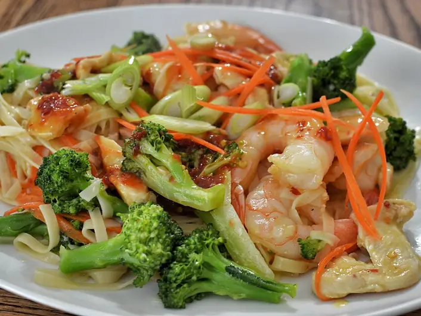

Фото: jeffreyw, CC BY 2.0
.jpg){kind=link}
Вок с курицей и овощами
Яичная лапша с курицей, перцем и морковью в соевом соусе
30 мин2 порц.665 ккал на порциюБ 50 · Ж 21 · У 72Азиатская кухня
Продукты на 2 порц.
- Яичная лапша150 г
- Куриное филе300 г
- Перец болгарский1 шт
- Морковь1 шт
- Лук репчатый1 шт
- Чеснок2 зуб.
- Имбирь10 г
- Соевый соус3 ст. л.
- Мёд1 ч. л.
- Крахмал1 ч. л.
- Растительное масло2 ст. л.
- Кунжут по желанию1 ч. л.
Как готовить
- Отварите лапшу по инструкции на упаковке, обычно 3-4 минуты, откиньте и сбрызните маслом.
- Курицу нарежьте тонкими полосками, смешайте с крахмалом и 1 ст. л. соевого соуса.
- Перец и лук нарежьте полосками, морковь соломкой, чеснок и имбирь мелко.
- Разогрейте вок на сильном огне с маслом. Обжарьте курицу 4-5 минут до белого цвета без розовых участков.
- Добавьте овощи, чеснок и имбирь, жарьте 3 минуты, постоянно помешивая. Овощи должны остаться хрустящими.
- Положите лапшу, влейте оставшийся соевый соус с мёдом и жарьте 1-2 минуты. Посыпьте кунжутом.
Совет. Всё нарежьте заранее: на сильном огне счёт идёт на минуты. Если сковорода небольшая, жарьте курицу в два захода, иначе она потушится.